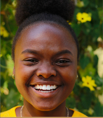

Geographical Information Systems and Computer Science
Summary
I am an ambitious and hardworking young lady with a great passion for computer
programming and data analysis. I am currently a GIS Graduate Trainee at the
Department of Water and Sanitation. I am a creative thinker and pay attention to
detail, enabling me to deliver what is required no matter the circumstances.
My greatest interest lies in working with Big Data as it allows me to use my
technical knowledge to solve challenging problems, benefiting the project at hand.
I am always willing to work in collaborative teams as I am eager to learn and
improve my skills.
Work Experience
Department of Water and Sanitation
September 2022 - Current
Geospatial database management
GIS support for Western Cape Regional Office
Geospatial data cleaning, manipulation and analysis
Designing digital maps with geospatial data.
The Zamani Project
July 2019 - November 2019 (Part-time Student Assistant)
Management and analysis of survey images.
Implementation and generation of panorama tours.
Lloyd&Hill Inc.
Jan 2019 (2 weeks vaation work)
Assisting in field surveys
Completion of field tasks such as traverses and levelling
Processing survey data on various softwares
Education
BSc (Hons) Computer Science - University of Cape Town (2021)
BSc Geomatics: Specialisation in Computer Science - University of Cape Town (2017 - 2020)
Skills
Soft Skills
Teamwork
Flexibility
Problem-solving
Leadership
Communication
Hard Skills
Computer Software
Data Analysis
Writing and Presenting
Technical Skills
Administrative
Technical Skills
Languages: Java, Python, R
Tools: Visual Studio, RStudio, Jupyter Notebook, MS Office